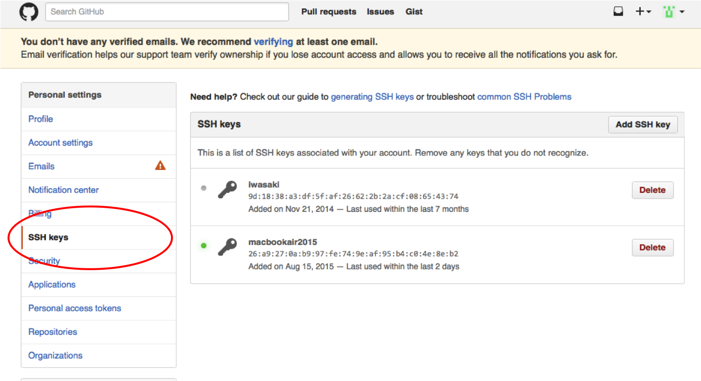
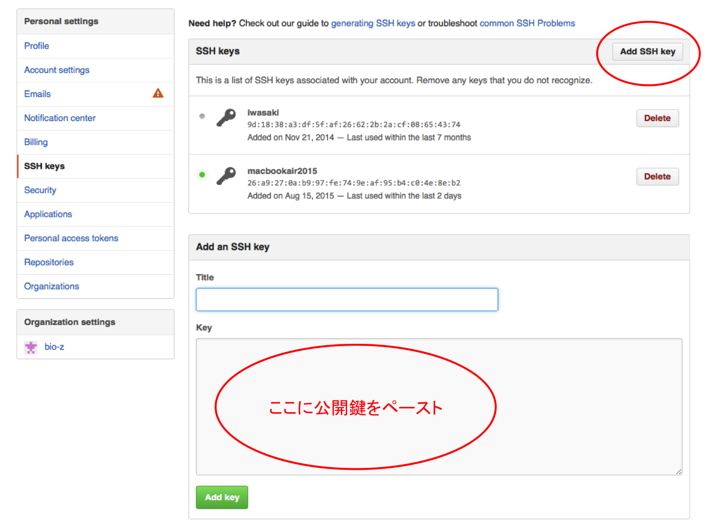

###準備
gitのインストール
gitのWindows版をインストールします。
git for windowsからダウンロードします。

ダウンロードしてきたインストーラーを起動します。

Nextをクリック

ライセンスを確認してNext

上の画像と同じようにチェックボックスを選択してください。デフォルトではAdditional Iconsが選択されていません。これを選択すると、デスクトップにbash(ターミナル)を起動するためのショートカットができます。

Nextをクリック

Nextをクリック。このあとインストールが開始されます。
インストールが終了すると、このようなGit bashのアイコンがデスクトップに作成されます。
Git bashではbashのターミナルが使えます。（linuxと同じコマンドが使えます。）このターミナル上でgitが使えるようになります。
Atomのインストール
ソースコードを編集するためのエディタをインストールします。
今回はAtomを使います。(普段使い慣れているエディタがある方はそちらで大丈夫です）
Atomからダウンロード&インストールしてください。
GitHubのアカウントをつくる
GitHubに登録し、ソースコードをみんなに公開できるようにします。
GitHubのページに飛んでください。

ユーザーネーム、メールアドレス、パスワードを入力し、「sign up for GitHub」をクリックして登録してください。
SSHの公開鍵を作成しGitHubに登録する
SSHの公開鍵を登録し、GitHubにソースコードをpushできるようにします。
GitHubのレポジトリと自分のローカルマシンのやりとりは、主にSSHを使用します。
（Gitで使われている通信方式：Git-サーバー-プロトコル）
手順
1. 秘密鍵・公開鍵の生成
2. 公開鍵をGitHubに登録
1. 秘密鍵・公開鍵の生成
鍵の有無を確認
$ ls ~/.ssh
以下の２つのファイルがあるか確認。もしあれば次の手順を飛ばして「2.公開鍵をGitHubに登録」へ
・id_rsa（秘密鍵）
・id_rsa.pub（公開鍵）
秘密鍵・公開鍵のペアを生成
$ ssh-keygen
実行すると以下の入力を求められるが、全て空にしたままenterでOK
・鍵の保存先(.ssh/id_rsa)
・パスフレーズ
・パスフレーズ(確認用)
作成した公開鍵を確認
$ cat ~/.ssh/id_rsa.pub
公開鍵をコピー
$ clip < ~/.ssh/id_rsa.pub
2. 公開鍵をGitHubに登録
右端のアイコンから「settings」をクリック
左のメニューバーから「SSH keys」をクリック
「Add SSH key 」をクリックして、作成した公開鍵を登録する
###説明資料
gitの説明
gitとはなにか、gitの使い方の説明です。
HTML/CSS,JavaScriptの説明
Webページの基本的なページの作成の仕方の説明です。
説明資料&演習課題
説明資料&演習課題をGitHubを使って入手します。
bio-z/template_819からgitを使って、クローンする
$ git clone git@github.com:bio-z/template_819.git
以下の資料が入手できます。
・gitの説明資料
・HTML/CSS,Javascriptの資料
・演習課題
・このguideのファイル